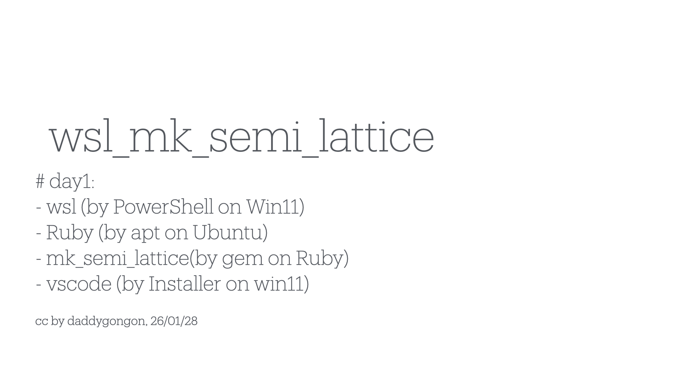
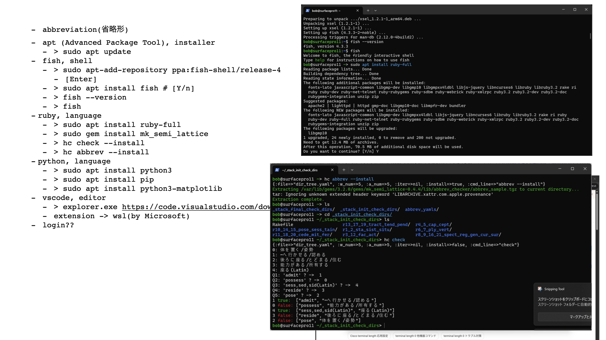
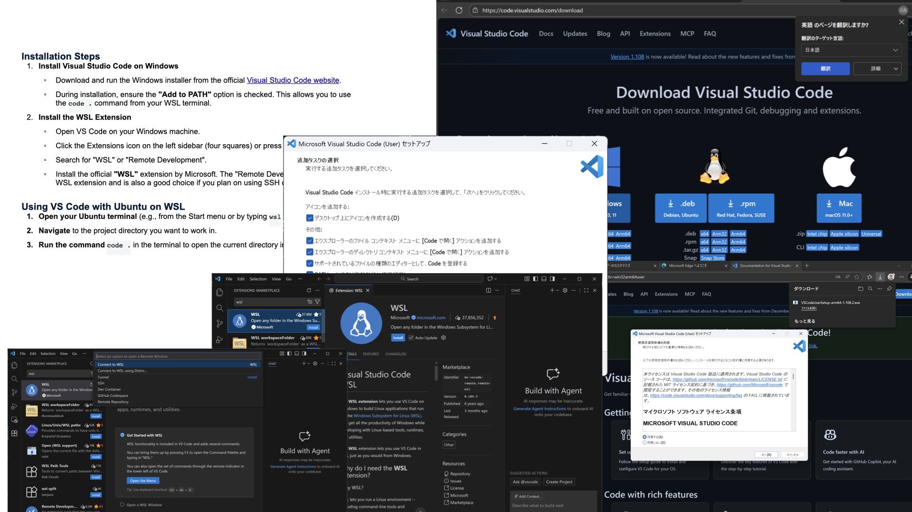
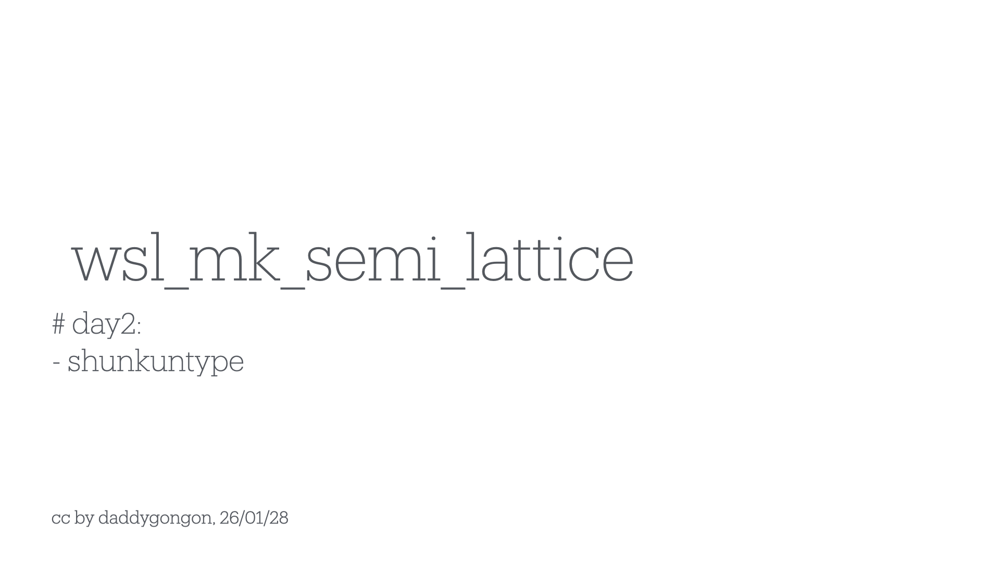
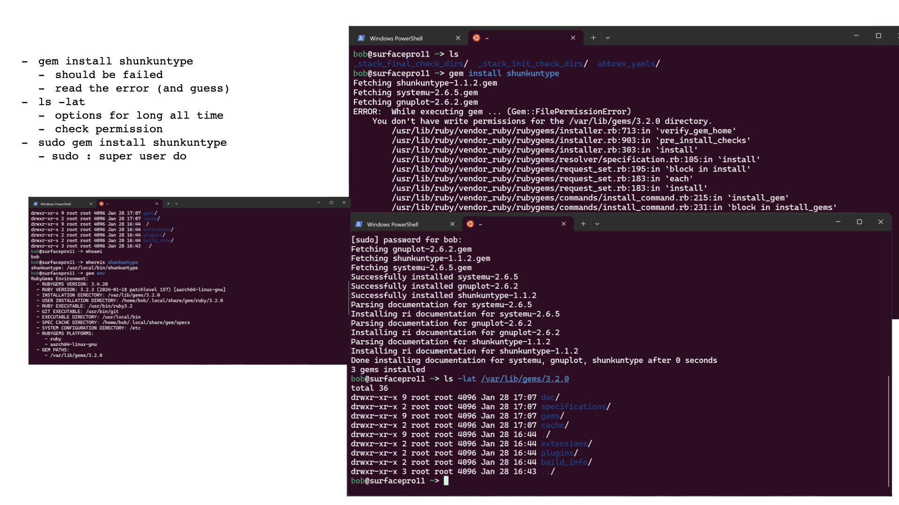
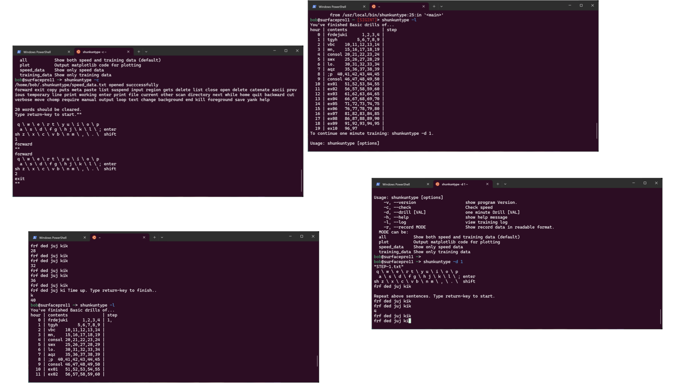
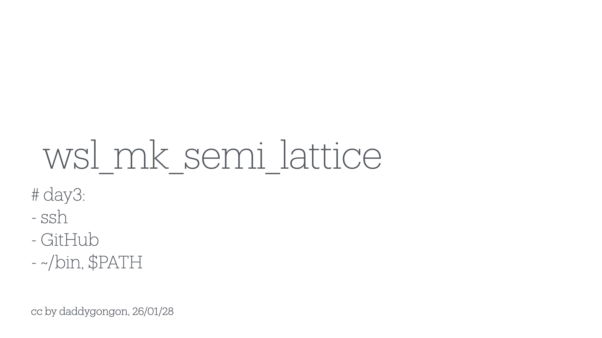
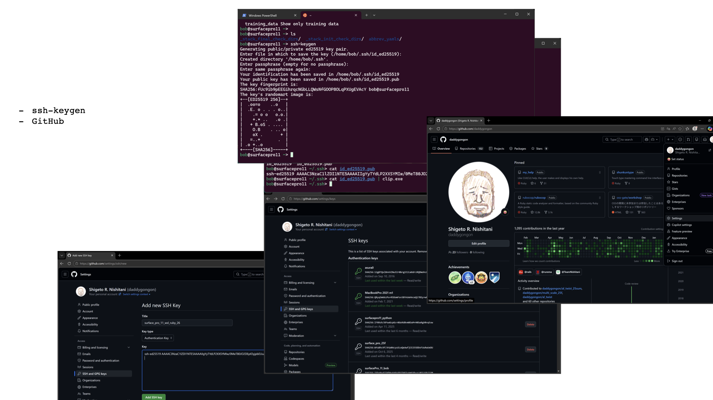
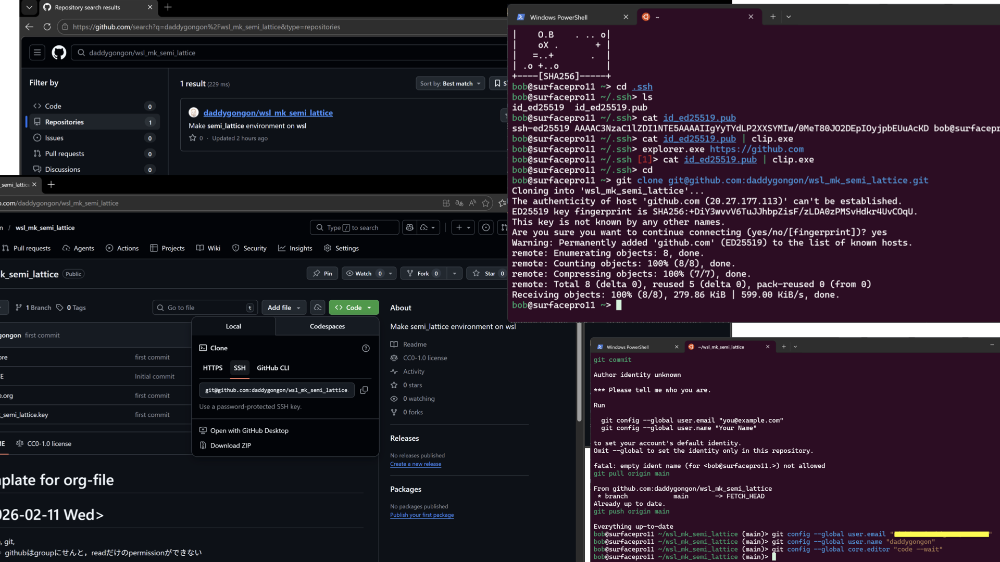

make semi_lattice environment on wsl
Table of Contents
1. wsl
- LinuxはUserが自分で環境を構築
- for the geeks
|  |
 |
 |  |
| wsl | ruby | vscode |
2. touch type
- 覚えるコツは，声に出して読む
- 見るだけでは覚えない
- やってみせ，言って聞かせてさせてみて，褒めてやらねば人は動かじ (山本五十六)
|  |
|  |  |
| permission | shunkuntype |
- python3, pip, matplotlib
- install, permission, path,
- cd, ls -lat, cat, wc
- shunkuntype
- sudo gem install shunkuntype
- 視線動画
3. ssh-github
|  |
|  |  |
| ssh | git clone, pull |